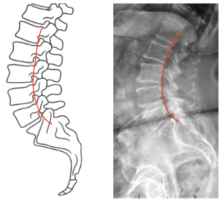

1) Description of Measurement
George’s Line—also known as the Posterior Vertebral Body Line—is a sagittal alignment assessment used to evaluate vertebral body translation and spinal stability.
It is drawn along the posterior margins of each lumbar vertebral body on a lateral X-ray and should form a continuous, smooth curve from L1 through the sacrum.
Any disruption or step-off between adjacent vertebrae suggests anterior or posterior displacement—commonly associated with spondylolisthesis, fracture, or ligamentous injury.
2) Instructions to Measure
3) Normal vs. Pathologic Ranges
4) Important References
White AA, Panjabi MM. Clinical Biomechanics of the Spine. 2nd ed. Philadelphia: Lippincott; 1990.
Lee C, Woodring JH, Rogers LF, Kim KS. Sagittal alignment of the lumbar spine: significance of the posterior vertebral line. AJR Am J Roentgenol. 1986;146(3):707-714.
Harris JH Jr, Edeiken-Monroe B. The Radiology of Emergency Medicine. 3rd ed. Baltimore: Williams & Wilkins; 1993.
Swartz EE, Floyd RT, Cendoma M. Cervical and lumbar spine functional anatomy and the biomechanics of injury due to compressive loading. J Athl Train. 2005;40(3):155–161.
5) Other info....
George’s Line is part of the three-line lumbar assessment, alongside the anterior vertebral line and spinolaminar line, providing a quick screen for sagittal integrity.
Step-offs correspond to vertebral translation seen in degenerative spondylolisthesis, traumatic subluxation, or pars defects.
Best assessed on true lateral radiographs with neutral pelvis and minimal rotation.
CT or MRI should follow if misalignment is present to evaluate facet integrity and neural compression.
Dynamic instability is defined by > 3.5 mm translation or > 11° angular motion between flexion and extension views.